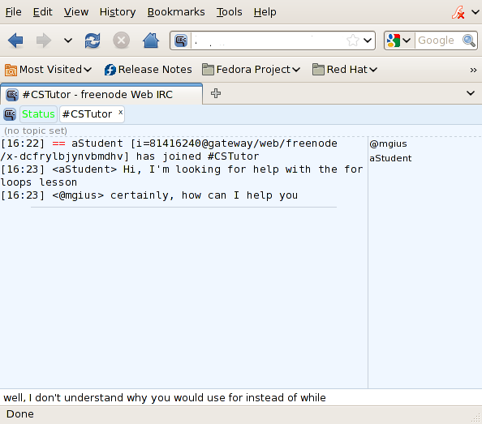

CSTutor is primarily intended to be used as a solitary study aid. However, the following methods of communication are integrated into CSTutor.
During any lesson, select the "Chat" Button (see 2.1 UI Overview) to open up the integrated IRC interface. Once the interface has loaded and connected, the interface behaves as a standard IRC chat room. To send a message, a user will type their message into the text field at the bottom of the chat interface, then press Enter (or Return). As other users post messages to the chat room, those messages will appear on every users screen.

Figure 2.5-1: Web based Chat room Interface.
Each Class will have its own chat room.